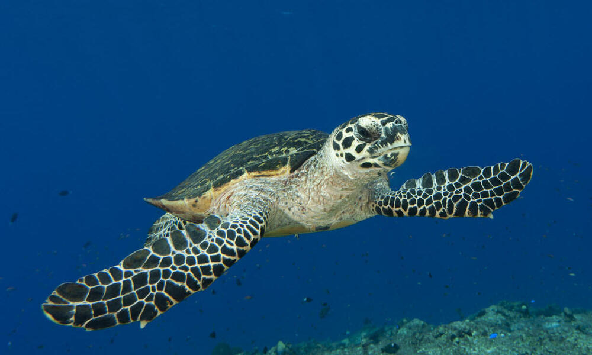

Main Categories of Turtles in Sri Lanka
Today there are 250 species of turtles on earth. Seven of these live in the ocean and are called sea turtles. The remaining 243 species live on land or in freshwater ponds and marshes. The terrestrial turtles, those that live solely on land, are called tortoises.
Five of the seven species of sea turtles in the world visit the shores of Sri Lanka to breed.
The males once they get into the sea, as hatchlings never come ashore though the females come back to the same beaches to lay their eggs. Turtles take at least 20 years to mature sometimes even as much as 30 years. Mature females after mating at sea come ashore to lay their eggs.
They always come in after dark. The female moves as far up the beach as possible to lay her eggs. This is to ensure that the water coming up with the tide does not reach the eggs and spoil them.
Once ashore the female labours up the beach to a spot it chooses. Then after turning and facing the sea, proceeds to dig a shallow depression in the sand with its flippers. Once the pit is dug a cylindrical egg chamber is dug, under her posterior end, also with its flippers.
The egg chamber is about 18 to 20 inches depending on the length of her flippers. Around 75 to 130 soft-shelled, ping-pong ball shaped eggs are laid.
There are 5 major types of turtles can be found in Sri Lanka.
Green Turtle
The green turtle is one of the largest sea turtles and the only herbivore among the different species. Green turtles are in fact named for the greenish color of their cartilage and fat, not their shells. In the Eastern Pacific, a group of green turtles that have darker shells are called black turtles by the local community. Green turtles are found mainly in tropical and subtropical waters. Like other sea turtles, they migrate long distances between feeding grounds and the beaches from where they hatched. Classified as endangered, green turtles are threatened by overharvesting of their eggs, hunting of adults, being caught in fishing gear and loss of nesting beach sites.
Olive ridley
The name for this sea turtle is tied to the color of its shell—an olive green hue. They are currently the most abundant of all sea turtles. Their vulnerable status comes from the fact that they nest in a very small number of places, and therefore any disturbance to even one nest beach could have huge repercussions on the entire population.
Hawksbill
Hawksbills are named for their narrow, pointed beak. They also have a distinctive pattern of overlapping scales on their shells that form a serrated-look on the edges. These colored and patterned shells make them highly-valuable and commonly sold as "tortoiseshell" in markets. Hawksbills are found mainly throughout the world's tropical oceans, predominantly in coral reefs. They feed mainly on sponges by using their narrow pointed beaks to extract them from crevices on the reef, but also eat sea anemones and jellyfish. Sea turtles are the living representatives of a group of reptiles that has existed on Earth and travelled our seas for the last 100 million years. They are a fundamental link in marine ecosystems and help maintain the health of coral reefs and sea grass beds.
Loggerhead
Loggerhead turtles are named for their large heads that support powerful jaw muscles, allowing them to crush hard-shelled prey like clams and sea urchins. They are less likely to be hunted for their meat or shell compared to other sea turtles. Bycatch, the accidental capture of marine animals in fishing gear, is a serious problem for loggerhead turtles because they frequently come in contact with fisheries. Loggerheads are the most common turtle in the Mediterranean, nesting on beaches from Greece and Turkey to Israel and Libya. Many of their nesting beaches are under threat from tourism development. Sea turtles are the living representatives of a group of reptiles that has existed on Earth and travelled our seas for the last 100 million years. They are a fundamental link in marine ecosystems and help maintain the health of coral reefs and sea grass beds.
Leatherback
Leatherback turtles are named for their shell, which is leather-like rather than hard, like other turtles. They are the largest sea turtle species and also one of the most migratory, crossing both the Atlantic and Pacific Oceans. Pacific leatherbacks migrate from nesting beaches in the Coral Triangle all the way to the California coast to feed on the abundant jellyfish every summer and fall. Although their distribution is wide, numbers of leatherback turtles have seriously declined during the last century as a result of intense egg collection and fisheries bycatch. Globally, leatherback status according to IUCN is listed as Vulnerable, but many subpopulations (such as in the Pacific and Southwest Atlantic) are Critically Endangered.
| Turtle Name | Population around the world | Best places to watch in Sri Lanka |
|---|---|---|
| more than 37,000 | Rekawa Beach Kosgoda Turtle Conservation Project Pigeon Island National Park Bentota |
|
| more than 800,000 | Rekawa Beach Kosgoda Turtle Conservation Project Pigeon Island National Park Rekawa Lagoon |
|
| around 10,000 | Rekawa Beach Pigeon Island National Park Kosgoda Turtle Conservation Project Hikkaduwa |
|
| around 2,000 | They are very rare sepecies in sri lanka as well as in the world |
|
| 30,000 to 40,000 | They are very rare sepecies in sri lanka as well as in the world |
|
| Also these are the most endangered turtles. |